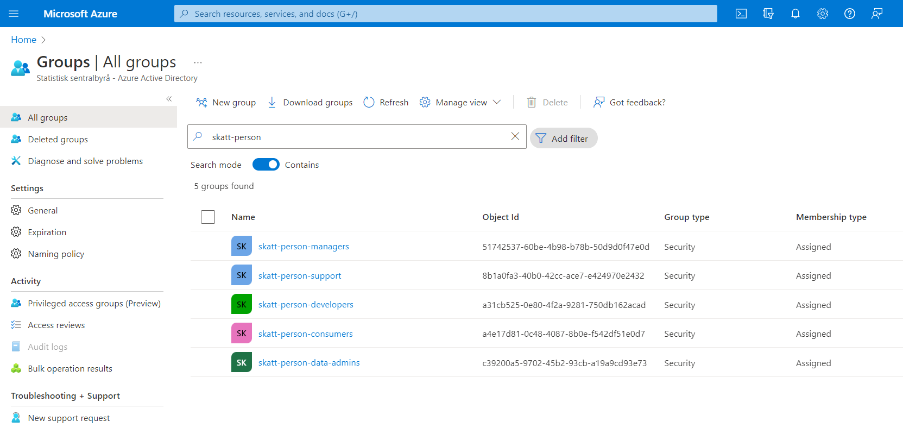

16 Administrasjon av team
I dette kapitlet viser vi hvordan du kan gjøre endringer i et eksisterende team. Typiske endringer er å:
- Legge til eller fjerne medlemmer i et team
- Liste ut medlemmer og tilgangsgrupper i et team
Mer kommer snart.
16.1 Legge til eller fjerne medlemmer i et team
For å legge til eller fjerne medlemmer i et team må du foreløpig opprette en Kundeservice-sak. Oppgi navnet på teamet du ønsker å endre på og hvilke medlemmer du ønsker å legge til eller fjerne. Oppgi også hvilken tilgangsgruppe medlemmene skal ha (data-admins, developers eller consumers).
Endringer i team må godkjennes av seksjonsleder før de blir gjort.
At endringer i team må gjøres via Kundeservice er midlertidig. Det jobbes med å lage et eget verktøy for dette.
16.2 Se medlemmer og roller i et team
For å se hvem som har hvilke tilganger i et Dapla-team så kan du gå inn på Azure Active directory. Her får du se en oversikt over alle Dapla-team, hvem som er medlemmer, og hvilken tilgangsrolle de har.
Anta at vi ønsker å se hvilke SSB-ansatte som har tilgang til teamet skatt-person. Da kan vi gjøre følgende:
Gå inn på nettsiden til Azure Active directory.
Skriv inn skatt-person i søkefeltet slik som vist i Figur 16.1.

Figur 16.1 viser at det finnes 5 tilgangsroller knyttet til et Dapla-team:
1. managers (benyttes ikke enda)
2. support (benyttes ikke enda)
3. developers
4. consumers
5. data-adminsI realiteten er det bare data-admin og developer som er aktuelle tilgangsroller for å produsere statistikk i Dapla-teamet. consumers-rollen innehas av folk fra andre Dapla-team som skal ha tilgang til data i din delt-bøtte.
- Hvis jeg ønsker å se hvem som er data-admins i teamet skatt-person, så kan jeg trykke på skatt-person-data-admins, og derettes trykke på Members i menyen til venstre. Da får jeg opp en liste over alle som har tilgang til data-admins i Dapla-teamet skatt-person.